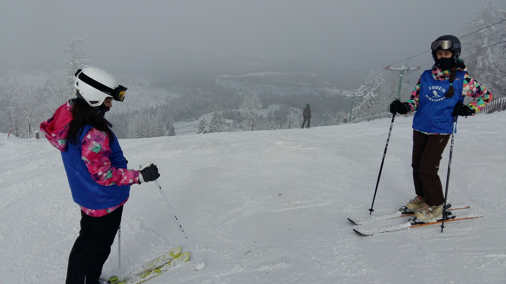
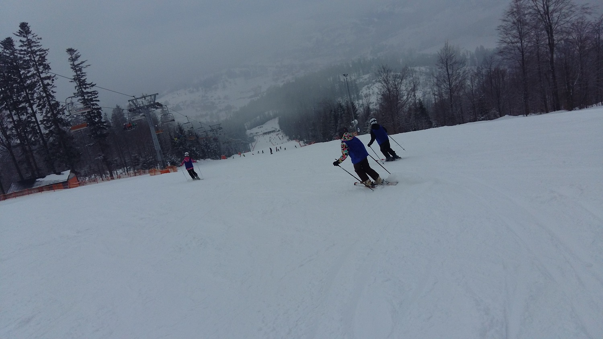
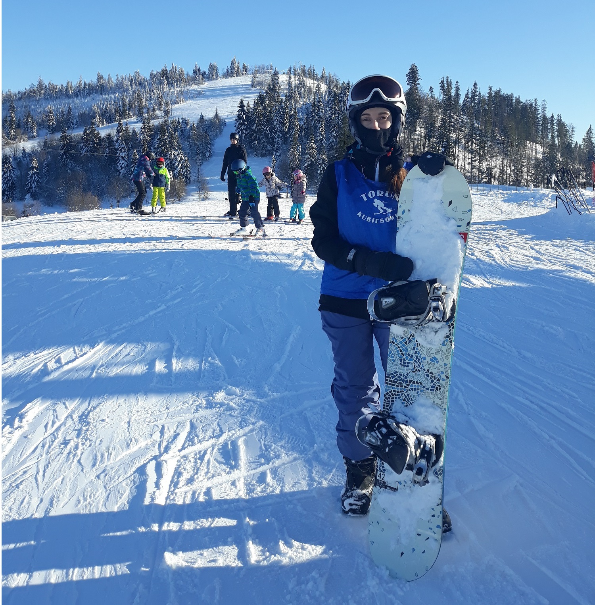
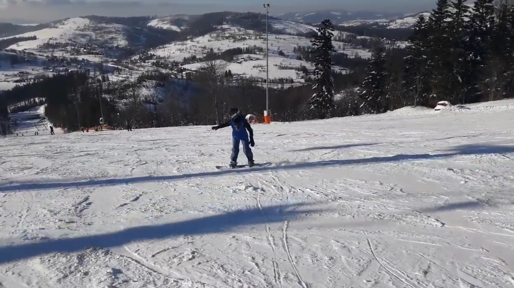
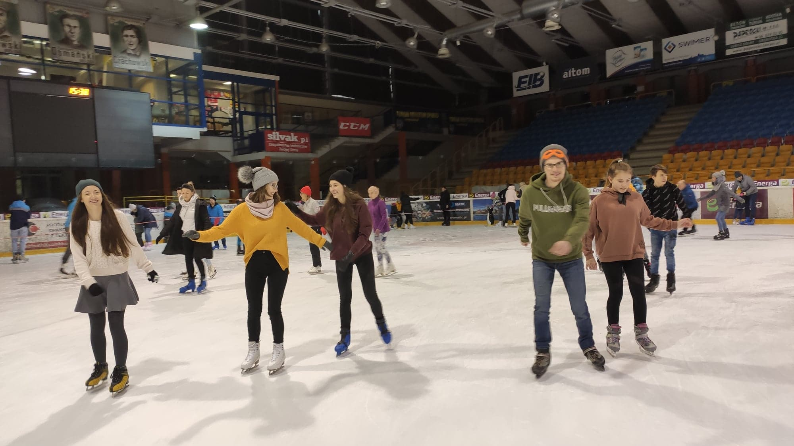
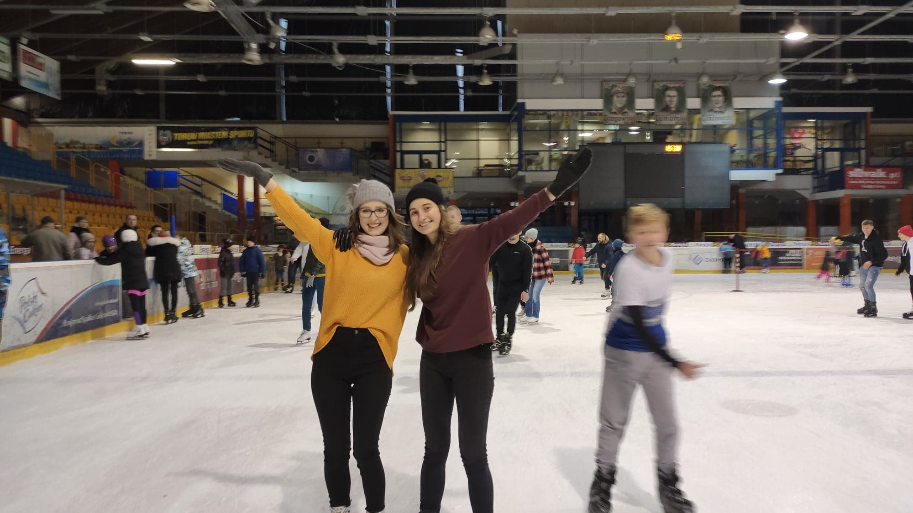
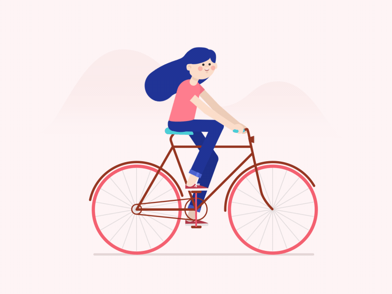

Narty
Na nartach jeździłam co ferie, z małymi przerwami, odkąd miałam parenaście lat z moim obozem na Kubiesówke. Poznałam tam mnóstwo ludzi i bardzo dobrze wpominam ten czas. Co wieczór graliśmy w różne gry obozowe, rano jechaliśmy na stok, przez pare godzin zjeżdżaliśmy, a potem wspinaliśmy się do naszego domku. Jazdę na nartach polecam każdemu kto jeszcze nie próbował, bo wrażenia są niezapomniane.


Snowboard
Na snowbordzie zaczęłam się uczyć jeździć od niedawna, rok po nartach i dopiero przez jedne ferie. Mimo, że upadki są bardziej bolesne i jest więcej siniaków to kiedy już się załapie sposób jeżdżenia to jest to bardzo ciekawe doświadczenie i myślę, że chciałabym w przyszłości kontynuować nauke dalej.


Łyżwy
Uwielbiam również bardzo jeździć na łyżwach. Uczyłam się na nich pierwszy raz jeździć w podstawówce i od tego momentu jak mam okazję wspólnie ze znajomymi wychodzimy wspólnie pojeździć :)


Rolki
Dzięki temu, że nauczyłam się jeździć dobrze na łyżwach, polubiłam bardzo jeźdżenie na rolkach. Brałam nawet udział z moją koleżanką w wydarzeniach, gdzie duża grupa ludzi jeździła razem przez miasto po ulicach na specjalnie wyznaczonych trasach.
Rower
Nie mogło też zabraknąć jeżdżenia na rowerze. Jest to idealne zajęcie na wolny, słoneczny dzień, kiedy można się trochę odprężyć i nie myśleć o innych sprawach. A najlepiej się jeździ razem :)

Ćwiczenia i rozciąganie
Od momentu gdy zaczęła się pandemia i nie można było wychodzić, uznałam, że jest to idealny czas na ćwiczenia we własnym domu. Znajdywałam wtedy plan ćwiczeń według, którego postępowałam, a potem dołożyłam do tego rozciąganie, które bardzo pomagało, kiedy przez dłuższy czas siedziało się przy komputerze i uczyło. Najczęściej korzystałam z tego filmika: 30 MIN FULL BODY STRETCHING , a sam kanał też polecam.
I inne ...
Na pewno było jeszcze wiele innych dziedzin sportu, które uprawiałam, np. basen, golf i tym podobne, ale są to raczej poboczne hobby, a najważniejsze wypisałam wyżej :)